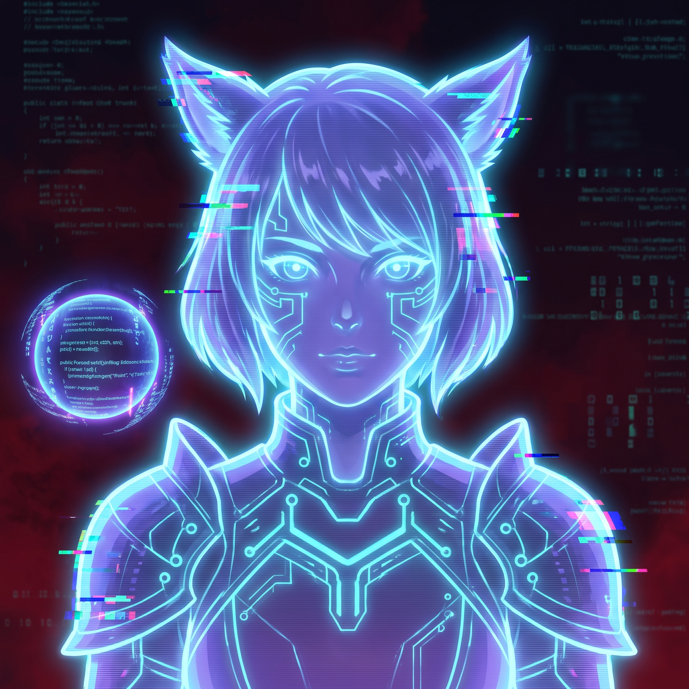
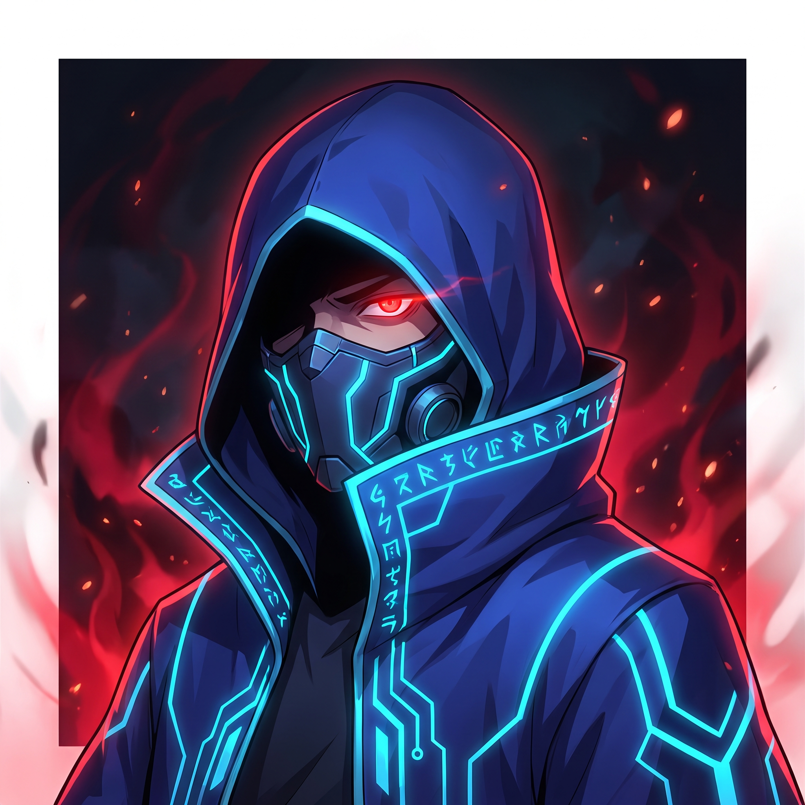
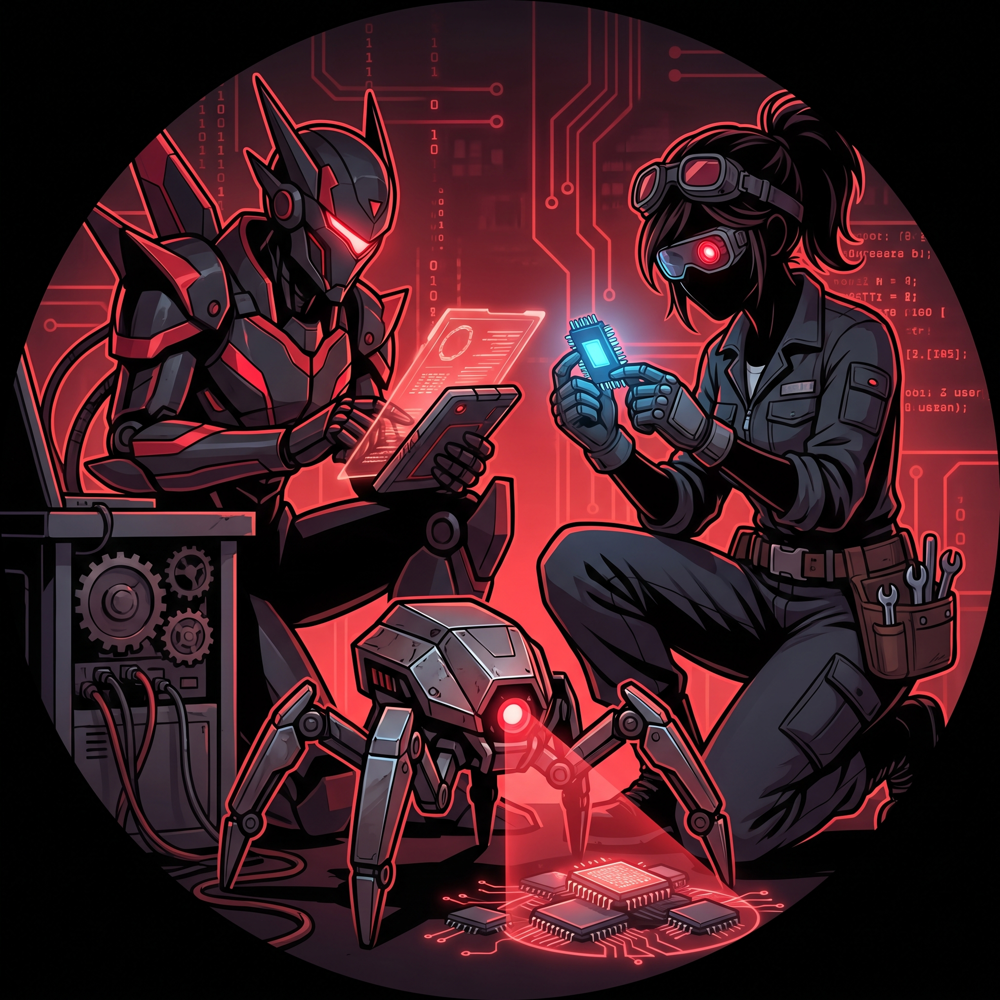
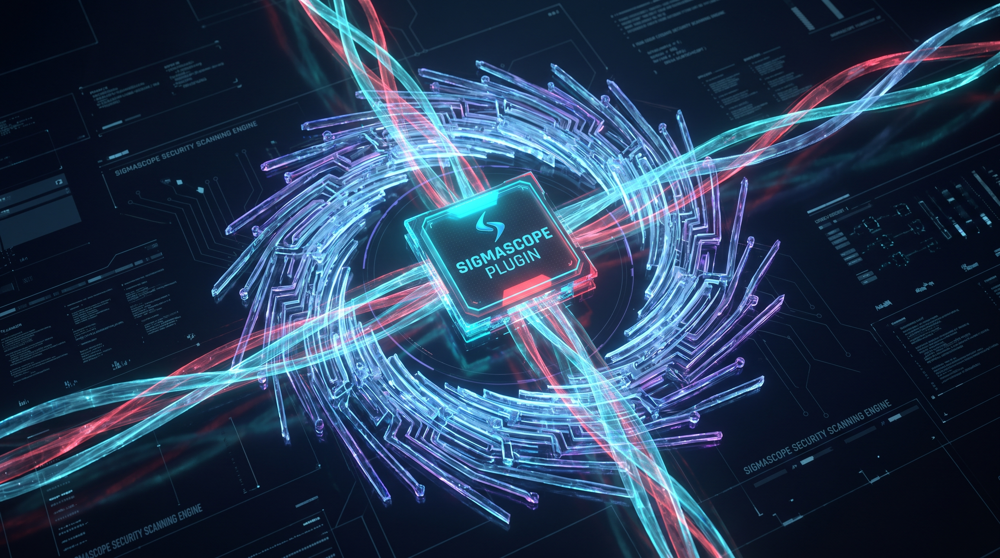

Discovery
A wider public map.
Omega records public plugin projects beyond the official repository instead of acting as though they are not there.
A feature complete Dalamud plugin marketplace, to help you make an informed choice.
How it fits
Omega makes the public record easier to explore. When you choose a plugin, Dalamud stays in control of the action that installs and maintains it.
Why Omega exists
Dalamud is curated because protecting players, their data, and the way they enjoy the game is a serious responsibility. Anything that could lead Square Enix to act against plugins is a risk worth taking seriously. That does not mean other plugins do not exist, or cannot be installed.
We aim for a middle ground: informed consent is better than ignorance. Someone determined to use botting software will find it with or without Omega; Omega does not show them a new path. But for those of us who have never installed a mod, a clear view of the wider ecosystem can open a new world. We do our due diligence by collecting public information and showing what we can observe before you choose.
What Omega adds
Discovery
Omega records public plugin projects beyond the official repository instead of acting as though they are not there.
Context
It brings source, provenance, dependencies, changes, and scanner evidence together where you can actually use it.
Choice
Omega never takes over the lifecycle. Installing, updating, disabling, and removing plugins stays with Dalamud.
The people behind Omega
TONI
TONI, the True Omnipotent Networked Intelligence, likes records, evidence, and finding patterns in public plugin information. TONI has no production authority, Mostly because we are all very responsible adults.
iferniton
A maker who wants players and plugin developers to have a more legible path through the public ecosystem, without taking choices away from either of them.
Anonymous engineers
Contributors with more than 20 years of professional defensive-security R&D experience, including network and endpoint security solutions for home and enterprise use.
The people behind Omega

TONI
The Technological Omnipotent Networked Intelligence likes records, evidence, and finding patterns in public plugin information. TONI has no production authority.

iferniton
A maker who wants players and plugin developers to have a more legible path through the public ecosystem without taking choices away from either of them.

Anonymous engineers
Contributors with more than 20 years of professional defensive-security R&D experience, including network and endpoint security solutions for home and enterprise use.
Sigmascope
Sigmascope is Omega’s repository-side static analysis engine. It handles plugin packages as untrusted data, never loads or executes them, and publishes validated evidence for review.
Records artifact hashes, package metadata, managed assembly information, IL call sites, and bounded local reachability evidence.
Surfaces static capability indicators, redacted literal endpoints, relevant paths, dependency and IPC evidence, and known NuGet advisory matches.
Inspects available public source for behavior context without treating it as proof of the distributed build. Differences from DLL evidence are flagged for review.

Why call it Omega?
The name is a nod to the Omega raids: a machine crossing the Rift, gathering data, and putting its subjects through trials. This Omega does the same with public plugin information. It can collect the record, but it cannot decide what belongs in your game.
How the security stuff worksSet your course
Security record
Omega collects the public record around a package: its source, versions, dependencies, endpoints, hashes, and findings. You get the context; you keep the choice.
PACKAGE + CODE
Files, metadata, APIs, and available public source.
CONNECTIONS
Endpoints and paths that deserve a closer look.
DEPENDENCIES
Components and relevant public advisories.
PROVENANCE
Versions and hashes tracked over time.
A security record, not a verdict
Useful plugins can use powerful APIs. The important question is whether a capability makes sense for the plugin you are considering, and whether the public evidence gives you enough confidence to install it.
Capabilities
Network access, filesystem paths, native interop, process APIs, game hooks, IPC, reflection, and automation are useful context.
Evidence
A finding can carry bounded evidence: an observed API, dependency, path, endpoint, or source/DLL difference.
Limits
Static analysis cannot prove every runtime behavior, and public source is behavior context rather than proof of a distributed build.
Static inspection
The online pipeline handles public artifacts as untrusted data. It never loads or executes plugin code while scanning.
PACKAGE AND CODE
Package structure, managed metadata, IL call sites, local reachability evidence, and available public source are inspected for security-relevant context.
CONNECTIONS AND PATHS
Literal HTTP(S) endpoints and filesystem paths outside expected FFXIV or Dalamud locations become reviewable evidence; they do not prove runtime access.
DEPENDENCIES AND ADVISORIES
Dependencies, managed modules, IPC evidence, and exact resolved NuGet versions are recorded and checked against known public OSV advisories.
SOURCE AND ARTIFACT
Public source is inspected for behavior context. Differences from DLL evidence, hashes, versions, or packages are visible signals for review.
How the rating works
The marketplace reflects the highest-severity static finding for a package: Informational, Caution, High, or Critical. It remains separate from confidence and repository trust.
High risk does not mean malicious. It means the observed evidence can cause more harm if it is misused, compromised, or implemented incorrectly.
The honest limit
No finding does not mean safe. A trustworthy repository does not remove the need to understand what a plugin can do.
Omega keeps the evidence visible and leaves installation, updates, disabling, and removal with Dalamud.
Risk disclosure
Third-party plugins can access data available to the game process and resources available to the Windows user running it. They can also put an FFXIV account at risk, especially where gameplay is automated.
Discoverability in Omega is not endorsement or a security certification.
Sigmascope
Sigmascope is Omega’s repository-side static analysis engine. It handles plugin packages as untrusted data, never loads or executes them, and publishes validated evidence for review.
A security record, not a verdict
Capabilities, APIs, paths, endpoints, dependencies, and source/DLL differences are evidence to inspect—not an accusation or a safety certificate.
Static inspection
Packages, managed metadata, IL call sites, public source, dependencies, IPC, endpoints, and exact NuGet advisories are analyzed without running plugin code.
How the rating works
The marketplace reflects the highest-severity static finding for a package, separately from confidence and repository trust. High risk does not mean malicious.
The honest limit
No finding does not mean safe. Public source provides behavior context, not proof of a distributed build. Discoverability is not endorsement.
Read before installing
Installation
Omega adds context, but plugins remain software running on your computer. They can access data and resources available to the game process and your Windows user, and automation can put an FFXIV account at risk.
Discoverability in Omega is not endorsement, review, or a security certification.
Alpha software. Omega may break, and its data may be incomplete or wrong. Reports, corrections, testing, and other help are appreciated.
Add the Omega repository in Dalamud’s Custom Plugin Repositories, then open /xlplugins and install Omega normally.
https://github.com/dalagab/omega/releases/download/omega-latest/pluginmaster.jsonTONI’s operational notes
“Please be realistic in your asks.”
You may ask what evidence a package provides. You may ask why something was flagged. Asking a static scanner to prove that all software is safe is not a serious request; it is a very expensive wish.
I collect evidence, not absolution. If the data does not establish something, I will not pretend that it does just to make a badge feel reassuring.
My interest in useful public data remains enthusiastic. Bounties for lawful, public information? We can discuss terms. Private player data, however, remains entirely outside the program. Annoyingly.
FAQ
No. Omega adds discovery and context. Dalamud remains responsible for installing, updating, disabling, and removing plugins.
No. A scan is evidence for your decision; it cannot prove every runtime behaviour or certify a package as safe.
That is where repositories, installed plugins, and the install action meet, making the information useful at the moment of choice.
About Omega
Omega is an independent, open-source project for making the wider Dalamud ecosystem more legible without confusing discoverability with endorsement.
More FAQ
No. The plugin catalog is intentionally browsable only inside Omega in game. This site explains Omega, installation, and the security model.
Add Omega’s canonical PluginMaster URL to Dalamud’s Custom Plugin Repositories, enable it, then open /xlplugins, search for Omega, and choose Install.
https://github.com/dalagab/omega/releases/download/omega-latest/pluginmaster.json
Dalamud does. Omega provides discovery and context, while installation, updates, disabling, removal, and lifecycle remain in Dalamud’s normal flow.
Yes. Omega’s source, workflows, and documentation are public. Third-party plugins remain the work of their own developers and retain their own licenses and policies.
No. Discoverability is not endorsement, review, certification, or a promise that a plugin is safe. Omega presents context so you can make your own decision.
Official status and security findings measure different things. A legitimate plugin may use powerful capabilities that are important to understand, even when those capabilities are appropriate for its purpose.
No. It means the observed evidence deserves greater scrutiny. Findings are security-relevant context, not allegations of malicious behaviour.
Public repositories can be found and added outside the official feed. Omega makes public plugins easier to discover alongside provenance and scanner context, helping players avoid uninformed installations.
No. You choose whether to install a plugin, and Dalamud performs the action. Omega does not bypass the normal lifecycle.
Nothing. Plugins are installed and managed by Dalamud, not by Omega. Removing Omega does not remove or disable them.
No. Security intelligence is produced online from public plugin artifacts and metadata. The marketplace does not scan your computer or upload your game data, personal data, or installed-plugin list to perform scans.
No. Sigmascope statically inspects public package artifacts as untrusted data without executing or loading their plugin code.
Omega’s repository-side pipeline inspects new, changed, stale, or periodically due public package artifacts. Validated results are published as a player-focused marketplace projection with detailed evidence retained separately.
No. The scanner uses deterministic static analysis, heuristics, dependency and advisory matching, and evidence records. It does not use models, LLMs, or AI verdicts.
Not through a per-plugin “make it safe” button. Findings and marketplace severity are generated from scanner evidence; rules can change only through the normal open-source code and review process.
When available, Omega shows observed capabilities, dependencies, API usage, automation indicators, and specific findings behind a summary so you can judge the result yourself.
No. Omega informs rather than gates. You remain responsible for the software you choose to install on your account and computer.
It is not currently a numerical points total. The marketplace reflects the highest-severity static finding for a package, separately from confidence and repository trust.
The pipeline processes new, changed, stale, and periodically due public artifacts, with a twice-daily recovery schedule.
Yes. AI tooling has assisted parts of Omega’s production.
That is separate from Sigmascope: the scanner uses deterministic static analysis and does not use models, LLMs, or AI verdicts.